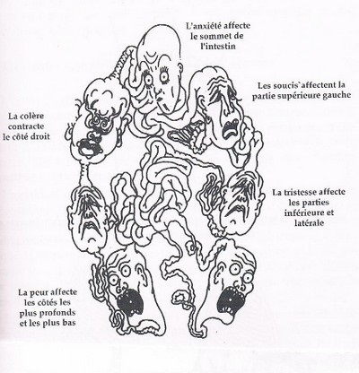
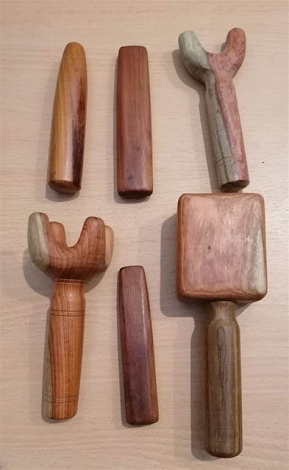
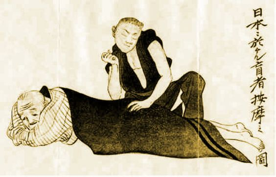
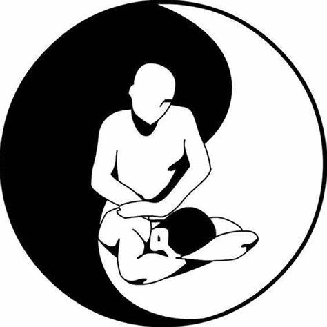
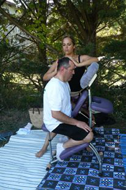
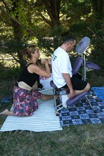
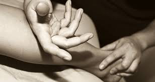
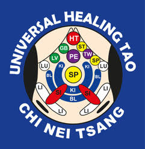

Les massages
Le Chi Nei Tsang «Massage du ventre»

Le Chi Nei Tsang est un terme chinois qui désigne le massage énergétique
des organes internes.
Cette technique permet de relâcher le stress, elle favorise la santé en
massant directement la zone du nombril et tout l’environnement abdominal
où s’accumulent le stress, les tensions et les émotions
négatives… En Occident cette zone est connue comme le 2nd cerveau (cf
travaux de Gerhson 1970), les taoïstes
appelle cette zone le Tan
tien (champ de l’élixir).
Si elle est nouée, toute l’énergie vitale du corps est bloquée, quand cela
arrive, les fonctions vitales énergétiques, telles qu’elles sont décrites
en Médecine traditionnelle chinoise, sont bloquées, ce qui
affaiblit
les organes vitaux internes et finit par épuiser l’énergie vitale.
Le Chi Nei Tsang permet d’évacuer rapidement les émotions négatives, les
tensions et les énergies malades, apportant confort et centrage. Cette
technique libère l’énergie vitale nécessaire aux organes internes et au
bon fonctionnement du corps humain. Le Chi Nei Tsang permet aussi de
soulager bon nombre de désordre digestifs, il permet de détoxifier le
système digestif et lymphatique et de libérer la circulation sanguine.
Le Chi Nei Tsang: TOKSEN

À l'origine, il s'appelait Sen Sip dans le système de massage thaïlandais,
qui était utilisé pour de nombreuses fonctions, notamment la guérison et
le maintien d'un corps sain.
La particularité unique et particulière de ce traitement est que le
thérapeute utilise un marteau en bois et différents outils en bois pour
détendre les dix principaux canaux énergétiques. Elle consiste en un
massage avec percussion des lignes d’énergie du corps et de certains
points énergétiques précis.
Ces percussions créent une vibration qui va pénétrer dans le corps de la
personne qui reçoit le soin pour traiter les douleurs, levers les blocages
énergétiques et favoriser une bonne circulation sanguine. Ces percussions
(plutôt agréables) sont effectués avec des ustensiles en bois ayant reçu
une intention de libération et de soulagement de la souffrance de la
personne qui va recevoir ce massage.
La stimulation vibratoire du massage Toksen va permettre d’éliminer les
énergies pathogènes de l’organisme ainsi que de rééquilibrer et de
stimuler l’énergie vitale.
Source HTTP/les ventres libres: https://lesventreslibres.fr
Massage Tuina

« Tui « signifie "pousser" et Na "saisir". Ce sont les 2 techniques
utilisées dans ce massage. C’est un massage correspondant à l'unicité de
la personne. En effet, le Tui Na a pour but de faire circuler librement et
sans entrave l'énergie - le Chi ou Qi- au travers des méridiens qui
parcourent notre corps. Il travaille sur les noeuds énergétiques ou les
déséquilibres (excès ou manque d'énergie) les tensions musculaires et les
blocages avec des mouvements précis (frottement, pincement,frictionnement,
étirement, tapotement...) pour permettre au corps d'aller mieux, et
d’accroître le bien-être général de la personne. Le Tui Na est clairement
énergétique. Il faut avouer que la technique peut s’avérer surprenante au
début car le geste est puissant et travaillé en profondeur, précisément
sur les zones du corps les plus tendues. Il permet un relâchement total
tout en dynamisant le corps les jours suivants la séance. Il agit très
bien contre les petits maux du quotidien liés au stress qui, en médecine
chinoise, sont des conséquences du déséquilibre énergétique : mal de tête,
mal de dos, fatigue, insomnie ...
Massage intuitif

Ce massage est orienté en fonction de l'anamnèse, de l'énergie de
l'instanté. Je me laisse guider par ce que le corps me raconte.
Le corps se laisse toucher, plus profondément, il peut relâcher les
tensions tant physique, psychique, qu'émotionnelle. Ce massage est un pont
entre la mémoire corporelle et l'accueil du ressentit, pouvant mettre en
lumière des prises de consciences.
AMMA ASSIS


Une Méthode de Détente Corporelle et Mentale selon un Art Traditionnel
Japonais d'Acupression. Une solution pour lutter contre le stress,
prévenir les risques psycho-sociaux et réduire les troubles
musculo-squelettique. Le terme massage, désigné par deux caractères
chinois, An "mettre la main sur" et Mo "aplanir", est alors adopté par les
japonais et nommé Anma, An, "maintenir la main tranquillement" et Ma,
"polir", "frotter". Le Anma au Japon date environ du début du 5ème siècle
de notre ère. Le Anma est une approche énergétique basée sur les principes
de la Médecine traditionnelle japonaise d'acupression.
Il a pour objectif d'éliminer les blocages énergétiques et d'équilibrer
les flux d'énergie Yin et Yang par l'exercice d'une série de mouvements
sur des points spécifiques situés le long des méridiens, des muscles et
des articulations. Quant au Amma assis, il a été développé aux Etats Unis
dans les années 80 par David Palmer, formé au Anma par Takoshi Nakamura
sensei. C'est à lui que nous devons cette méthode de détente et de
relaxation sur chaise, déjà très répandu dans les pays anglo-saxons pour
lutter contre le stress en entreprise. Le Amma assis combine plusieurs
techniques corporelles qui s'apparentent au Shiatsu : pressions,
percussions, vibrations, tapotements, effleurages. Le praticien effectue
un enchaînement précis appelé "Kata" en japonais, littéralement, "une
série d'actions structurées". La personne qui reçoit le Amma reste
habillée, assise confortablement sur une chaise ergonomique. Il est
appliqué sur le dos, les hanches, la nuque, les bras, les mains et la
tête.
Outre ses effets bénéfiques sur la circulation de l'énergie, le massage
Amma assis procure un état profond de relaxation et de bien-être intérieur
en 15 ou 20 minutes seulement. Il est d'une efficacité remarquable. Il
répond parfaitement aux conditions de vie de notre société et aux besoins
de l’homme moderne affairé. Il rend le massage accessible à un large
public du fait qu’il se pratique souvent sur le lieu de travail ou à
domicile, évitant ainsi les problèmes de déplacements. Le Amma assis a de
nombreux effets positifs au niveau corporel et psychique .
Il contribue à l'amélioration de notre qualité de vie. Le stress, la
pollution, une alimentation déséquilibrée, un manque d’exercice physique
et de contact tactile, les problèmes existentiels et matériels, sont
autant de facteurs qui perturbent notre équilibre physique et mental.
En pratique, le Amma assis
Favorise une plus grande circulation de
l'énergie .
Contribue à la résistance au stress,
apaise et calme .
Favorise un sommeil réparateur .
Entraîne une meilleure élimination des
toxines .
Soulage la douleur .
Réduit les tensions musculaires .
Augmente la conscience de son corps et de
ses émotions.
Contre-indications



A qui peut-on recommander le massage? Finalement presque tout le monde. On
ressent tous à un moment de la fatigue, de l’épuisement, la sensation
d’être au bout du rouleau. Il vaut mieux prévenir que guérir. Il s’adresse
donc à toutes les personnes qui travaillent beaucoup (la fameuse posture
assise et courbée devant l’ordinateur !) ou ressentent du stress. Ceux qui
ont des douleurs récurrentes mais qui ne nécessitent pas de traitements
médicamenteux ou chirurgicaux. Enfin les sportifs qui sollicitent beaucoup
leur corps, comme les coureurs qui s’entrainent pour un semi ou un
marathon.
La contre-indication absolue ou totale détermine qu’AUCUN massage ne doit
être prodigué, excepté après l’évaluation et la recommandation écrite du
médecin traitant. Le massage est contre-indiqué pour les clients concernés
par les situations suivantes :
Les maladies virales et infectieuses avec
différents symptômes.
Les maladies fongiques graves. Les
infestations parasitaires.
Le cancer des ganglions lymphatiques.
Les états fébriles ex: alcool-drogue.
Le cancer des ganglions; La
chimiothérapie.
Les maladies vasculaires graves. Les
situations inflammatoires importantes ex : phlébite.
Dans le
cas d’une contre-indication partielle, votre thérapeute évitera de masser
certaines régions du corps en lien avec votre condition de santé
particulière ou pourra s’adapter à votre condition médicale temporaire.
Une contre-indication partielle est recommandée dans les cas suivants :
Les lésions cutanées bénignes de type inflammatoires, de type viral ou de
type fongique; Les brûlures et blessures en guérison; Une infection de la
peau ex :
furoncles.
Une phlébite traitée et stable.
Une fracture.
Une zone de cancer en traitement de
radiothérapie.
Une zone de chirurgie récente.
Une excroissance.
Une situation douteuse.
Lorsqu’il y a présence d’une allergie, il est essentiel pour le thérapeute
d’en être informé afin qu’il puisse utiliser des produits adaptés. Par
exemple, pour un client ayant une allergie aux noix, l’huile d’amande ne
sera pas utilisée.
Il en est de même pour les interactions possibles lors de l’utilisation de
certains produits en contact avec la peau comme les huiles essentielles.
Questionnaire-santé- Anamnèse.
Avant de débuter un soin, votre thérapeute
vous demande de compléter un questionnaire-santé afin de prodiguer un
massage adapté à vos besoins et votre santé. Il s’avère donc essentiel de
le remplir et qu’il soit le plus complet possible. Chaque massothérapeute
se réserve le droit de prodiguer ou non un massage en fonction de ses
compétences et de l’évaluation professionnelle qu’il fait de la situation.